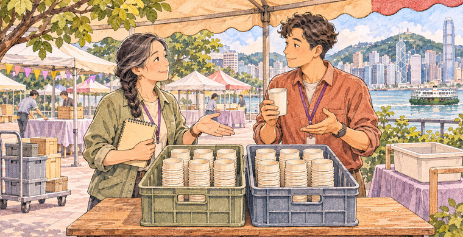

SUS-05 · 香港 · 10–15分鐘 · 可持續發展 · 重用系統 · 生命週期思維
可重用五十次，實際用幾次？

新聞裏 · 可歸還的餐具
在 2025年3月24日，香港康樂及文化事務署報道，香港花卉展覽曾提供免費餐具租借服務，作為減廢措施之一。
這是本地實例，並非就各項環境影響作實測比較。下文的主辦方和備選方案均屬虛構。
課堂決定
虛構的課堂情境。 香港一家小型市集主辦機構正籌辦四場周末市集。每場須供應500份飲品，所用杯具容量相同，並須符合適用的食物安全標準。
購買： 購入500隻新製、印有自訂圖案的可重用杯。按供應商規格，每隻至少可用50次。杯具由主辦方保留。
租用： 每場從現有共用庫存租用500隻無印花的可重用杯。兩次租用之間，由服務商收回、清洗及存放杯具。
兩份完整報價均在核准預算內，亦包括四場市集所需的適當清潔。購買可展示品牌，杯具亦歸主辦方所有；租用則由服務商管理歸還流程。主辦方要的是一套切實可行、環境影響較低的系統，而不只是買一批看似可以重用的杯具。
兩份報價尚未提供可供比較的生命週期環境評估。有這項服務，不代表它在環境上有優勢。
你的決定你會購買特製杯，還是從共用庫存租用？在甚麼條件下，你的選擇在環境方面會較可取？
第二輪 · 改了一個事實
按計劃，購入的杯具將會 在四場市集各使用一次，每隻皆然。假設500隻杯在這幾場市集均全數歸還，並保持可用。四場過後，主辦方 沒有已排期的活動，亦無接收機構、指定的存放負責人或已有資金支持的存放計劃。
供應商所說的「可用50次」是耐用規格，並非對實際流轉次數的預測。
租用服務訂明會收回杯具、清洗，再放回共用庫存。服務商可提供借出、歸還及其後流轉的紀錄，但這些紀錄尚未核實。兩個方案均未提供可供比較的評估，涵蓋製造、清潔、運輸、損失及使用壽命終結階段的影響。
你的決定你會維持原來的選擇，還是改變決定？指出尚欠甚麼營運安排，並解釋在判定哪個方案的環境影響較低之前，你需要哪些證據。
看實際提供多少服務，不只看可用多少次
按計劃，這批購入的杯具可供應 500 × 4 = 2,000份飲品：每隻杯用四次，而非五十次。日後仍有可能再用，但目前未有安排，也無法保證。
耐用的物品要能反覆提供服務，必須有人安排歸還、安全清洗、存放和下一位使用者。不要為了讓環境影響的計算結果更好看而省略必要的衞生程序。
選擇一套系統，訂明條件
暫時選擇租用有理據支持，因為報價所列的循環安排不局限於同一物主的四場活動。須核實這些安排和流轉紀錄是否可信；承諾再次借出，不等於已經重用。
如果主辦方明確訂出存放、回收和日後使用的安排，並為這些安排提供資金，購買同樣可行。耐用的特製杯不一定要在第四場市集後丟棄。
在取得可比較的證據前，暫不對環境影響作定論是合理的。自置或共用都不一定在每一類環境影響上佔優。
你會量度甚麼？
在飲品供應份數相同、服務標準相當的基礎上作比較。記錄杯具的借出、歸還和再次借出情況，亦記錄損失和補充、清潔所需的投入、運輸路線和載量、存放安排，以及使用壽命終結階段的處理。把觀察所得的使用情況與預測分開。
要問的是：從整套系統來看，改動能否減少相關影響？廢物較少、溫室氣體排放較低、用水較少，是三項不同的聲稱，不能以其中一項證明其餘各項。
選做計算 · 分攤製造影響
以 M 代表每隻購入杯具在某一指定影響類別的製造影響。把這項影響分攤到計劃中的四次使用，結果是 每份飲品 M/4。如果按缺乏證據支持的五十次使用來分攤，結果便是 M/50。
前者相當於 12.5倍 的後者。這項比較只涉及該項製造影響的分攤，並非總排放量，也沒有量化租用的優勢。日後實際使用情況可能改變分攤結果。這裏沒有提供普遍適用、可使兩個方案的影響相等的重用次數。
教師說明
展開第二輪之前，先請學生就購買或租用作初步投票。請他們指出，飲品喝完後，下一步由誰負責。最後以一項營運承諾和一項所需證據作結，不要在缺乏證據下判定哪個方案較「環保」。
這是關於重用系統設計的個案，並非指現實中的供應商有失職之處。所有數量和報價均屬虛構；現有公共計劃不保證這個主辦方合資格參加，亦不保證可向其提供服務。
第二輪
按計劃，購入的杯具將會 在四場市集各使用一次，每隻皆然。假設500隻杯在這幾場市集均全數歸還，並保持可用。四場過後，主辦方 沒有已排期的活動，亦無接收機構、指定的存放負責人或已有資金支持的存放計劃。
供應商所說的「可用50次」是耐用規格，並非對實際流轉次數的預測。
租用服務訂明會收回杯具、清洗，再放回共用庫存。服務商可提供借出、歸還及其後流轉的紀錄，但這些紀錄尚未核實。兩個方案均未提供可供比較的評估，涵蓋製造、清潔、運輸、損失及使用壽命終結階段的影響。
你的決定你會維持原來的選擇，還是改變決定？指出尚欠甚麼營運安排，並解釋在判定哪個方案的環境影響較低之前，你需要哪些證據。